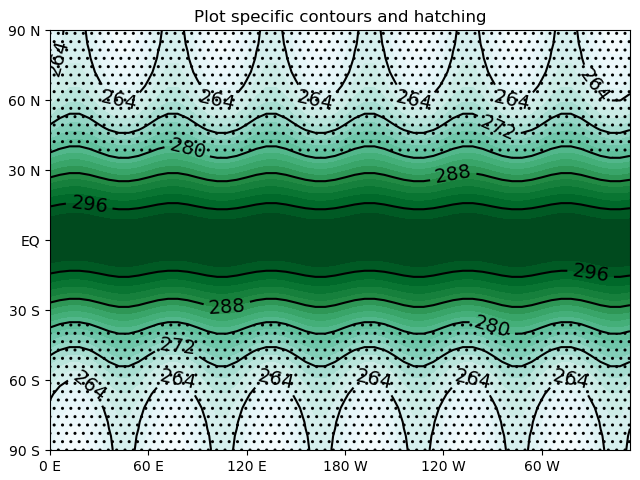

Note
Click here to download the full example code
Contour plot with hatches¶
Out:
/home/peterh/pygeode/pygeode/plot/wrappers.py:299: UserWarning: The following kwargs were not used by contour: 'clevels'
self._cnt = axes.contour (*self.plot_args, **self.plot_kwargs)
/home/peterh/pygeode/pygeode/plot/wrappers.py:306: UserWarning: The following kwargs were not used by contour: 'clevels'
self._cnt = axes.contourf (*self.plot_args, **self.plot_kwargs)
/home/peterh/pygeode/pygeode/plot/wrappers.py:306: UserWarning: The following kwargs were not used by contour: 'linewidth'
self._cnt = axes.contourf (*self.plot_args, **self.plot_kwargs)
<Figure size 640x480 with 1 Axes>
import pylab as pyl
import pygeode as pyg
import numpy as np
from pygeode.tutorial import t1
ax = pyg.plot.AxesWrapper()
# Pass **kwargs to matplotlib contourf
pyg.vcontour(t1.Temp, clines=5, clevels=5, colors='k', axes=ax)
pyg.vcontour(t1.Temp, clevels=5, cmap='BuGn', axes=ax)
ax.clabel(ax.plots[0], colors='k', fmt='%d', fontsize=14)
pyg.vcontour(t1.Temp, levels=[200,280], linewidth=0, hatches=['..'], alpha=0, axes=ax)
ax.setp(title = 'Plot specific contours and hatching')
pyl.ion()
ax.render(1)